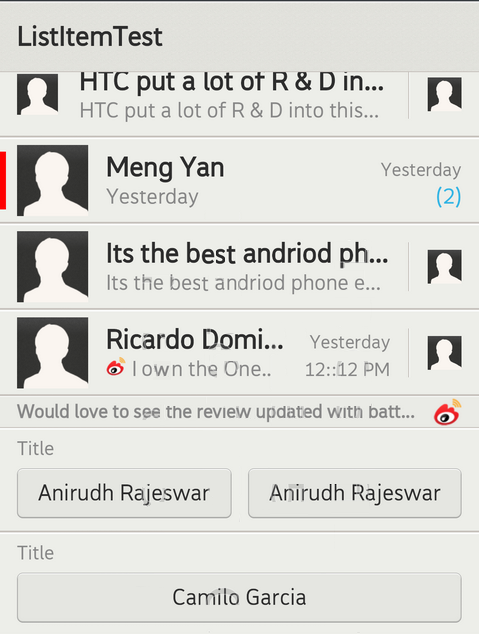

ListItem
Description
A ListItem represents a container that usually use in listwidget. In listItem you can put widget or customized widgets that provider by COS. Listitem can divide into two part ListItemLite and ListItemPanel. ListItemlite is an empty container. you need to put the ListItem Panels to it.
-
ListItemLite
ListItemLite is a container that developer need put ListItemPanels to it.
-
ListItemPanel
ListItemPanels we provider ColorPanel, CheckBoxPanel, RadioButtonPanel, ImageWidgetPanel, ImageButtonPanel, TextPanel, StampPanel,
InverseTwoLineTextPanel, CenterTitleTextPanel, TwoLineTitleTextPanel, InputFieldPanel, ButtonPanel, ComboPickerPanel, DividerPanel,
CustomizePanel, StampWithUnreadPanel, SeparatorPanel. Each panel contain widgets. Each panel has default maring and padding. It developer
want to change it, you can change it by yourself via Widget standard API.

In this section, you can know how to use the ListItemLite in ListWidget.
1. create the ListItemLite
void MyPage::onInit(Persistence* const p) {
// create Scene and Listwidget
mpListWidget = new ListWidget(this);
mpProvider =
new ListItemTestNamespace::MyProvider(1, this,
mpScene->getResources());
mpListWidget->setProvider(mpProvider);
mpListWidget->setItemsCanFocus(false);
mpListWidget->setFastScrollEnabled(false);
mpListWidget->setChoiceMode(ListWidget::CHOICE_MODE_MULTIPLE);
mpController = new LinearController(this);
mpController->setOrientation(LinearController::VERTICAL);
mpController->addWidget(mpListWidget);
mpScene->attachController(mpController);
mpScene->setupSceneLayout();
}
2. Implement Provider to set listItem
Below example we put the TEXTPANEL and STAMPPANEL to the listItemlite.
you can see the result image.

class MyProvider: public AbsListItemProvider {
public:
MyProvider(int32_t size, Page pPage, Resources pRes)
: mDataSize(size), mpPage(pPage) {
Scene pScene = pPage->getSceneSingleton();
if (pScene != NULL) {
Resources pRes = pScene->getResources();
if (pRes != NULL) {
// get the default margin and padding space
m1 = pRes->getDimensionPixelOffset(com::gaia::internal::R::dimen::margin_l);
m2 = pRes->getDimensionPixelOffset(com::gaia::internal::R::dimen::margin_m);
m3 = pRes->getDimensionPixelOffset(com::gaia::internal::R::dimen::margin_s);
m4 = pRes->getDimensionPixelOffset(com::gaia::internal::R::dimen::margin_xs);
m5 = pRes->getDimensionPixelOffset(com::gaia::internal::R::dimen::spacing);
m6 = pRes->getDimensionPixelOffset(com::gaia::internal::R::dimen::leading);
} else {
GLOG(LOG_TAG, LOGER, "Invalid Resources");
}
} else {
GLOG(LOG_TAG, LOGER, "Invalid Scene");
}
}
virtual ~MyProvider() {
Widget *pDeleted = NULL;
ControllerParams *pParams = NULL;
for (size_t i = 0; i < mWidgetPool.size(); i++) {
pDeleted = const_cast<Widget *>(mWidgetPool.itemAt(i));
pParams = pDeleted->getControllerParamsN();
delete pParams;
delete pDeleted;
}
mWidgetPool.clear();
}
virtual int32_t getCount() const {
return mDataSize;
}
virtual int64_t getItemId(int32_t position) const {
return position;
}
virtual gaia::core::Widget *createItemWidget(int32_t position) {
ListItemLite* pItem = new ListItemLite(mpPage,
ListItemLite::TEXTPANEL,
ListItemLite::STAMPPANEL, ListItemLite::END);
}
// We will set the TEXTPANEL and STAMPPANEL style
virtual gaia::core::Widget *getItemWidget(int32_t position,
gaia::core::Widget *pItemWidget, gaia::core::Widget *pParent) {
ListItemLite *pItem = static_cast<ListItemLite *>(pItemWidget);
// get the TextPanel handle then set the text that want to show. We set the two line text.
TextPanel::Handler *pHandler1 =
static_cast<TextPanel::Handler *>(pItem->getHandler(0));
// set the text to the TextPanel
pHandler1->setText("Just got the One Xcellent!", TextPanel::ST_TITLE_TEXT_ID);
pHandler1->setText("Just got the One Xcellent!", TextPanel::ST_SUBTITLE_TEXT_ID);
pHandler1->setTextMode(TextPanel::TWO_LINE_TEXT);
//set the TextPanel margin
pHandler1->setRootMarginLeft(m2);
pHandler1->setRootMarginRight(m2);
// get the StampPanel handle then set the text that want to show.
StampPanel::Handler *pHandler2 =
static_cast<StampPanel::Handler *>(pItem->getHandler(1));
// set the text to the Stamp
pHandler2->setText("Yesterday", StampPanel::ST_STAMP_TEXT_ID);
pHandler2->setText("12::12 PM", StampPanel::ST_SUBSTAMP_TEXT_ID);
//set the StampPanel margin
pHandler2->setRootMarginRight(m2);
return pItemWidget;
}
We provide ColorPanel, CheckBoxPanel, RadioButtonPanel, ImageWidgetPanel, ImageButtonPanel, TextPanel, StampPanel,
InverseTwoLineTextPanel, CenterTitleTextPanel, TwoLineTitleTextPanel, InputFieldPanel, ButtonPanel, ComboPickerPanel, DividerPanel,
CustomizePanel, StampWithUnreadPanel, SeparatorPanel. For developer to use as default setting. If developer wnat to define it's owner
he/she can use CustomizePanel. CustomizePanel is an empty that use can put any widegt in it.
### 1. ColorPanel ###
we provider the below API set the colorpanel
// set the colorPanel color
1.1 void setColor(int32_t color);
//set colorbar's up and down padding.
1.2 void setColorTopAndBottomPadding(int32_t padding);
//get color panel width.
1.3 int32_t getColorWidth();
### 2. CheckBoxPanel ###
we provider the below API set the CheckBoxPanel
// Changes the checked state of CheckBox.
2.1 void setChecked(bool checked);
//Returns button is clicked or pressed
2.2 bool isChecked();
//Register a callback to be invoked when the checked state of this button changes.
2.3 void setOnCheckedChangeListener(
gaia::ui::ICompoundBtnCheckedChangeListener* listener);
### 3. RadioButtonPanel ###
we provider the below API set the RadioButtonPanel
// Changes the checked state of CheckBox.
3.1 void setChecked(bool checked);
//Returns button is clicked or pressed
3.2 bool isChecked();
//Register a callback to be invoked when the checked state of this button changes.
3.3 void setOnCheckedChangeListener(
gaia::ui::ICompoundBtnCheckedChangeListener* listener);
### 4. ImageWidgetPanel ###
we provider the below API set the ImageWidgetPanel
// Sets a drawer as the content of this ImageWidget.
4.1 void setImage(int32_t resId);
//Sets a drawer as the content of this ImageWidget.
4.2 void setImage(gaia::graphics::Drawer *pDrawer);
//Sets a bitmap as the content of this ImageWidget.
4.3 void setImage(gaia::graphics::Bitmap *pBitmap);
//Register a callback to be invoked when this view is clicked.
4.4 void setOnClickListener(gaia::core::OnClickListener* l);
//Register a callback to be invoked when this view is touched.
4.5 void setOnTouchListener(gaia::core::OnTouchListener* l);
### 5. ImageButtonPanel ###
we provider the below API set the ImageButtonPanel
//Sets a drawer as the content of this ImageButton.
5.1 void setImage(int32_t resId);
//Sets a drawer as the content of this ImageButton.
5.2 void setImage(gaia::graphics::Drawer *pDrawer);
//Sets a bitmap as the content of this ImageButton.
5.3 void setImage(gaia::graphics::Bitmap *pBitmap);
//Register a callback to be invoked when this view is clicked.
5.4 void setOnClickListener(gaia::core::OnClickListener* l);
//Register a callback to be invoked when this view is touched.
5.5 void setOnTouchListener(gaia::core::OnTouchListener* l);
### 6. TextPanel ###
we provider the below API set the TextPanel
//Set text size associated with the given id of TextWidget.
6.1 void setTextSize(int32_t size, int32_t id);
//Set text associated with the given id of TextWidget.
6.2 void setText(const gaia::base::String &string, int32_t id);
//Set a drawer as the content associated with the given id of ImageWidget.
6.3 void setImage(int32_t resId, int32_t id);
//Set a drawer as the content associated with the given id of ImageWidget.
6.4 void setImage(gaia::graphics::Drawer *pDrawer, int32_t id);
//Set a bitmap as the content associated with the given id of ImageWidget.
6.5 void setImage(gaia::graphics::Bitmap *pBitmap, int32_t id);
//Set image size associated with the given id of ImageWidget.
6.6 void setImageSize(int32_t width, int32_t height, int32_t id);
//Set visibility associated with the given id of Widget.
6.7 void setVisibility(int32_t visibility, int32_t widgetId);
//Change display mode of TextPanel.
6.8 void setTextMode(int32_t mode);
//Register a callback to be invoked when this view is clicked.
6.9 void setOnClickListener(gaia::core::OnClickListener* l);
//Change subtitle and messages text style.
6.10 void enableInfoMode();
### 7. StampPanel ###
StampPanel is a panel that default display two short TextWidgets, user can
change to only display one TextWidget via setTextMode.
we provider the below API set the StampPanel.
// Set text size associated with the given id of TextWidget.
7.1 void setTextSize(int32_t size, int32_t id);
// Set text associated with the given id of TextWidget.
7.2 void setText(const gaia::base::String &string, int32_t id);
// Set visibility associated with the given id of Widget.
7.3 void setVisibility(int32_t visibility, int32_t widgetId);
// Change display mode of StampPanel.
7.4 void setTextMode(int32_t mode);
// Register a callback to be invoked when this view is clicked.
7.5 void setOnClickListener(gaia::core::OnClickListener* l);
### 8. InverseTwoLineTextPanel ###
InverseTwoLineTextPanel is a panel that default display two TextWidgets,
first TextWidget is normal second is bold.
we provider the below API set the InverseTwoLineTextPanel.
// Set text size associated with the given id of TextWidget.
8.1 void setTextSize(int32_t size, int32_t id);
// Set text associated with the given id of TextWidget.
8.2 void setText(const gaia::base::String &string, int32_t id);
// Set a drawer as the content of ImageWidget.
8.3 void setImage(int32_t resId);
// Set a drawer as the content of ImageWidget.
8.4 void setImage(gaia::graphics::Drawer *pDrawer);
// Set a bitmap as the content of ImageWidget.
8.5 void setImage(gaia::graphics::Bitmap *pBitmap);
// Set visibility associated with the given id of Widget.
8.6 void setVisibility(int32_t visibility, int32_t widgetId);
### 9. CenterTitleTextPanel ###
CenterTitleTextPanel is a panel that default display a single bold TextWidget,
the TextWidget in CenterTitleTextPanels max line is one.
we provider the below API set the CenterTitleTextPanel.
// Set text size of TextWidget.
9.1 void setTextSize(int32_t size);
// Set text of TextWidget.
9.2 void setText(const gaia::base::String &string);
// CenterTitleTextPanel move to center horizontal.
9.3 void enableCenterHorizontal();
### 10. TwoLineTitleTextPanel ###
TwoLineTitleTextPanel is a panel that default display a single bold TextWidget,
the TextWidget in TwoLineTitleTextPanels max line are two.
we provider the below API set the TwoLineTitleTextPanel.
// Set text size of TextWidget.
10.1 void setTextSize(int32_t size);
// Set text of TextWidget.
10.2 void setText(const gaia::base::String &string);
### 11. InputFieldPanel ###
InputFieldPanel is a panel that display a single EditWidget.
We provider the below API set the InputFieldPanel.
// Set text size associated with the given id of TextWidget.
11.1 void setTextSize(int32_t size, int32_t id);
// Set text associated with the given id of TextWidget.
11.2 void setText(const gaia::base::String &string, int32_t id);
//Set visibility associated with the given id of Widget.
11.3 void setVisibility(int32_t visibility, int32_t widgetId);
//Set the selection anchor to <code>start</code> and the selection edge to <code>stop</code>.
11.4 void setSelection(int32_t start, int32_t stop);
//Move the cursor to offset <code>index</code>.
11.5 void setSelection(int32_t index);
//Select the entire text.
11.6 void selectAll();
// Move the selection edge to offset <code>index</code>.
11.7 void extendSelection(int32_t index);
### 12. ButtonPanel ###
ButtonPanel is a panel that display a single Button.
We provider the below API set the ButtonPanel.
// Set text size associated with the given id of TextWidget.
12.1 void setTextSize(int32_t size, int32_t id);
// Set text associated with the given id of TextWidget.
12.2 void setText(const gaia::base::String &string, int32_t id);
// Set visibility associated with the given id of Widget.
12.3 void setVisibility(int32_t visibility, int32_t widgetId);
// ButtonPanel move to center vertical.
12.4 void enableCenterVertical();
// set ButtonPanel width fill parent.
12.5 void enableButtonFillParent();
// set ButtonPanel width and height.
12.6 void setButtonSize(int32_t width, int32_t height);
// Register a callback to be invoked when this view is clicked.
12.7 void setOnClickListener(gaia::core::OnClickListener* l);
### 13. ComboPickerPanel ###
ComboPickerPanel is a panel that display a single ComboPicker, this
panel do not use with ListWidget.
We provider the below API set the ComboPickerPanel.
//Set text size associated with the given id of TextWidget.
13.1 void setTextSize(int32_t size, int32_t id);
//Set text associated with the given id of TextWidget.
13.2 void setText(const gaia::base::String &string, int32_t id);
//Set visibility associated with the given id of Widget.
13.3 void setVisibility(int32_t visibility, int32_t widgetId);
//set ComboPickerPanel width fill parent.
13.4 void enableComboPickerFillParent();
//set ComboPickerPanel width and height.
13.5 void setComboPickerSize(int32_t width, int32_t height);
### 14. DividerPanel ###
DividerPanel is a panel that display a horizontal divider.
We provider the below API set the DividerPanel.
//Set visibility of Widget.
14.1 void setVisibility(int32_t visibility);
### 15. CustomizePanel ###
CustomizePanel is a panel for developer to associate there own widget
component.
We provider the below API set the CustomizePanel.
// add Widget into CustomizePanel.
15.1 void addWidget(gaia::core::Widget *pWidget);
### 16. StampWithUnreadPanel ###
StampWithUnreadPanel is a panel that default display two short TextWidgets,
first TextWidget display stamp second display unread number, usually
use in Mail or Message AP.
We provider the below API set the StampWithUnreadPanel.
// Set text size associated with the given id of TextWidget.
16.1 void setTextSize(int32_t size, int32_t id);
// Set text associated with the given id of TextWidget.
16.2 void setText(const gaia::base::String &string, int32_t id);
// Set number to second TextWidget.
16.3 void setUnreadNumber(int32_t number);
// Set visibility associated with the given id of Widget.
16.4 void setVisibility(int32_t visibility, int32_t widgetId);
// Change display mode of StampWithUnreadPanel.
16.5 void setTextMode(int32_t mode);
### 17. SeparatorPanel ###
SeparatorPanel is a panel that display list item separator.
We provider the below API set the SeparatorPanel.
//Set text size associated with the given id of TextWidget.
17.1 void setTextSize(int32_t size, int32_t id);
// Set text associated with the given id of TextWidget.
17.2 void setText(const gaia::base::String &string, int32_t id);
// Set a drawer as the content of ImageWidget.
17.3 void setImage(int32_t resId);
// Set a drawer as the content of ImageWidget.
17.4 void setImage(gaia::graphics::Drawer *pDrawer);
// Set a bitmap as the content of ImageWidget.
17.5 void setImage(gaia::graphics::Bitmap *pBitmap);
// Set ImageWidgets width and height.
17.6 void setImageSize(int32_t width, int32_t height);
// Set visibility associated with the given id of Widget.
17.7 void setVisibility(int32_t visibility, int32_t widgetId);
// Set ImageWidget align separator right.
17.8 void enableIconAlignRight();
References
- ListWidget
- AbsListItemProvider